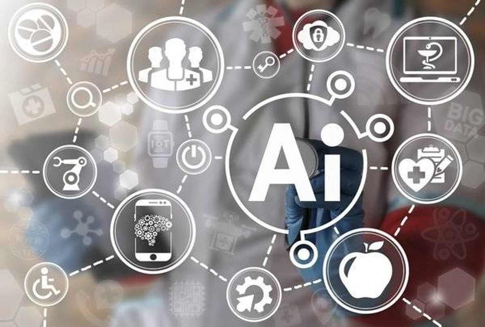

À quoi ressemblera cet assistant personnel ?
Il interagira avec l'utilisateur à travers différents appareils et canaux, en conservant intégralement
le contexte et toute l'histoire de vos 'relations'. En même temps, il connaîtra et prendra en compte votre caractère,
vos particularités et vos intérêts.… Lire plus
Que doit-on faire pour que l'IA devienne omniprésente ?
Tout le monde : la communauté d'experts, l'État, le système éducatif, les organismes de réglementation doivent prendre des mesures pour préparer la société à l'utilisation de l'intelligence artificielle. La communauté d'experts et les entreprises doivent concevoir un schéma d'application pour intégrer les technologies
dans la vie quotidienne. Les philosophes doivent réfléchir à la coexistence de l'homme et de l'IA. Le système éducatif doit se réorganiser pour enseigner aux enfants des connaissances et des compétences pertinentes, ainsi que pour permettre à l'homme d'apprendre tout au long de sa vie. L'État doit s'occuper de la sécurité et de la protection de
la population contre les risques liés à l'IA.
Un autre élément d'adaptation est le débat public sur les possibilités et les conséquences de l'utilisation de l'intelligence artificielle.
Il est important de mener un dialogue ouvert. C'est à partir de là, je pense, que tout commencera. Et pas seulement dans les cercles professionnels, mais aussi dans le grand public. Il y aura probablement des domaines où les
technologies d'IA seront interdites ou utilisées au minimum. Mais la majeure partie de la société pourra être préparée.
… Lire plus

Quelles nouvelles possibilités fournira-t-il ?
L'impact de l'IA sera aussi massif que l'impact d'Internet et de la transformation numérique au cours des 30
dernières années. De plus, dans 30 ans, une génération numérique sera aux commandes de la politique,
de l'économie, des affaires et du domaine social, habituée à obtenir des informations par le biais de canaux numériques.
Si l'humanité parvient à établir des règles du jeu acceptables qui minimisent les risques associés à l'intelligence artificielle,
chacun d'entre nous pourrait avoir un assistant numérique personnel sans lequel nous ne pourrions pas nous passer,
tout comme nous ne pouvons actuellement pas nous passer de téléphone. … Lire plus
Quels métiers disparaîtront et lesquels apparaîtront ?
Les nouvelles professions comme les entraîneurs en intelligence artificielle ou les interprètes de l'IA émergeront pour expliquer
les décisions et rendre l'IA plus humaine.
L'IA associée à la robotique remplacera les métiers à risque et ceux à routine élevée. Les scientifiques utiliseront
l'IA pour accélérer la recherche, mais leur profession restera indispensable. Les dirigeants d'entreprise connaîtront
de légères modifications dans leur planification stratégique. Il est espéré que l'IA ne remplacera pas les enseignants,
mais servira plutôt d'assistant précieux … Lire plus
Quels sont les risques associés à l'intelligence artificielle?
L'intelligence artificielle peut être comparée à l'énergie atomique. Les deux peuvent être utilisés à la
fois à des fins pacifiques et militaires. Tout le monde comprend que la bombe atomique est une chose destructrice.
L'intelligence artificielle peut également être destructrice. Premièrement, l'IA générative peut créer différents
deepfakes et autres contenus où il est presque impossible de distinguer la vérité du mensonge.
Deuxièmement, l'IA peut avoir un impact négatif sur le système éducatif en le rendant superficiel,
en offrant immédiatement des réponses toutes faites. Certaines écoles interdisent actuellement l'utilisation de calculatrices en classe,
afin que les enfants apprennent à effectuer des opérations mathématiques par eux-mêmes. Et c'est juste. Il est important d'apprendre
les bases fondamentales pour comprendre comment les choses fonctionnent. Si quelque chose ne fonctionne pas, comme une calculatrice,
nous devons être capables de résoudre le problème nous-mêmes.
Troisièmement, l'intelligence artificielle peut générer des données erronées,
que les humains prennent pour vérité. Bien sûr, ce n'est pas un problème de l'IA elle-même,
mais des données sur lesquelles elle est formée. S'ils contiennent des erreurs dès le départ,
le programme générera également du contenu avec diverses distorsions. Pour résoudre ce problème,
il est nécessaire de marquer les données créées par l'intelligence artificielle. … Lire plus
Quelles études faire maintenant pour être demandé dans 30 ou 50 ans?
Il semble qu’il ou elle devra être capable de reconstruire et d’apprendre pour la vie.
Comme avant - pour maîtriser une spécialité à l’université, toute sa vie pour y travailler et prendre sa retraite - ne fonctionnera plus.
Il semble que la connaissance doit devenir beaucoup plus profonde et fondamentale. Les fonctions exécutives seront remplacées
par l’intelligence artificielle, et la personne devra comprendre et être capable d’expliquer comment ce qui est et fonctionne de l’intérieur.
Ces dernières années, la tendance dans l’éducation à enseigner des compétences appliquées prévaut, tant de gens ne peuvent même pas expliquer
pourquoi quelque chose devrait être fait de cette façon et pas autrement.
À l’avenir, selon l’observateur, les établissements d’enseignement supérieur enseigneront à penser profondément … Lire plus